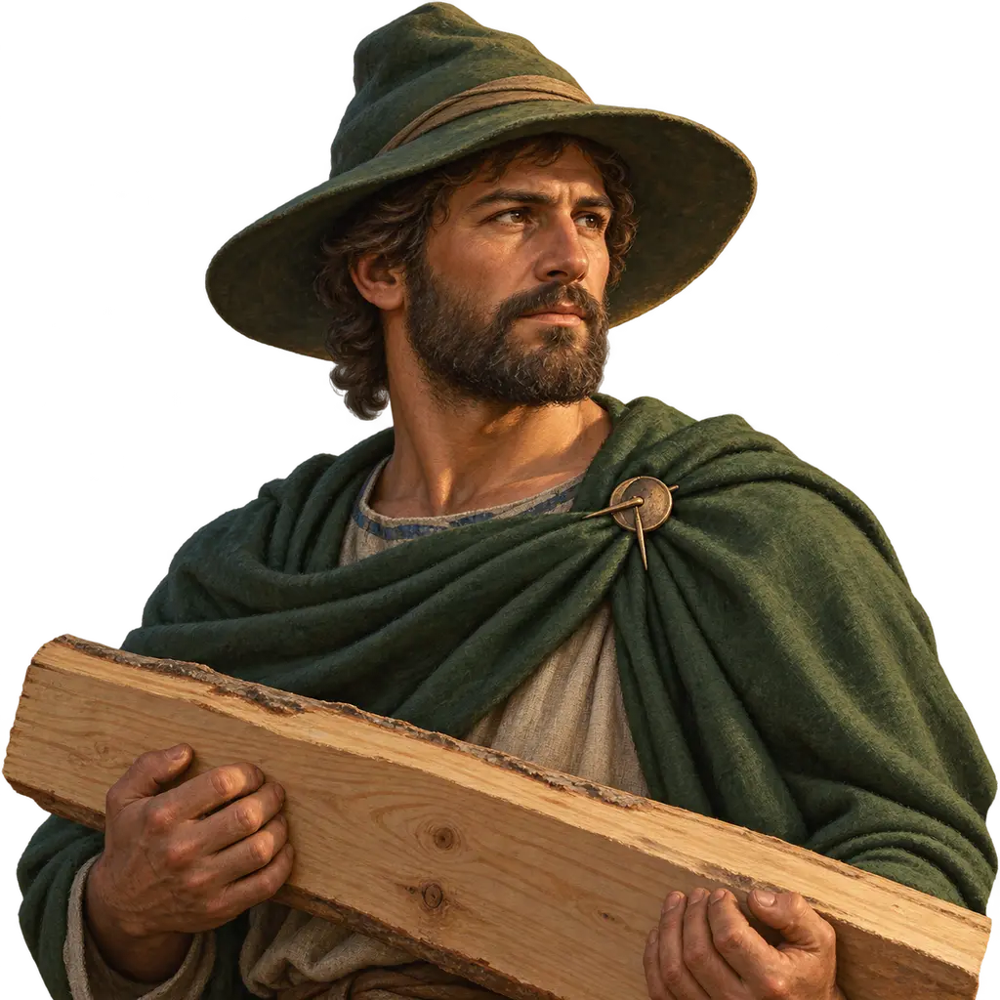
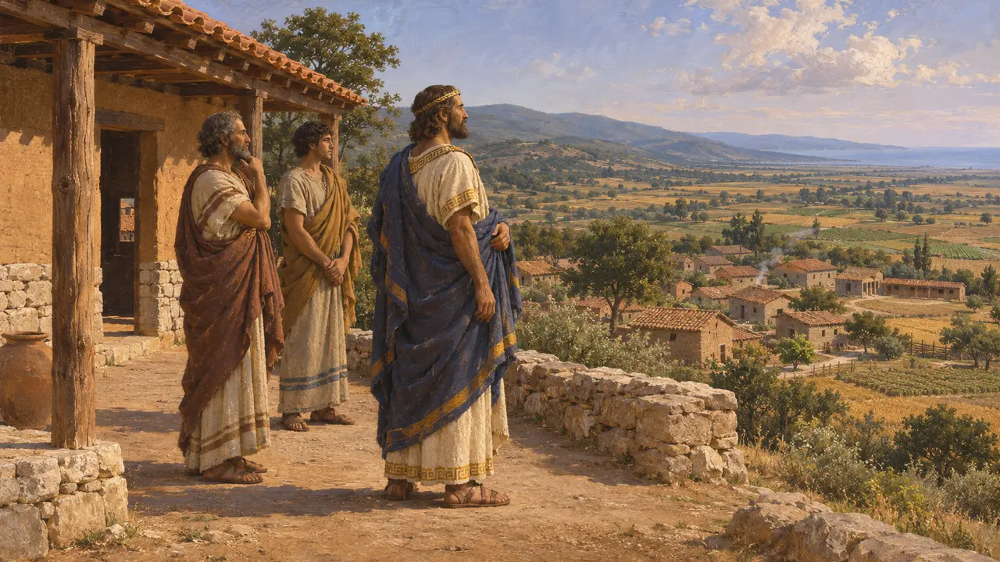
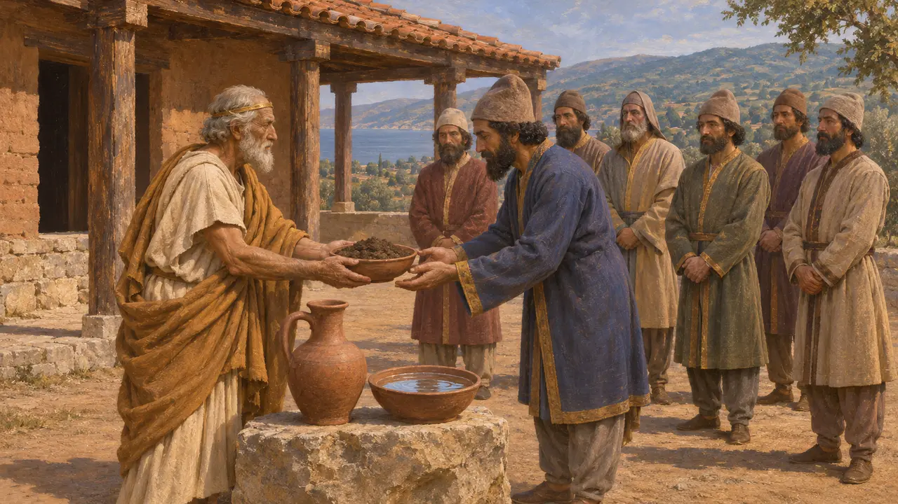
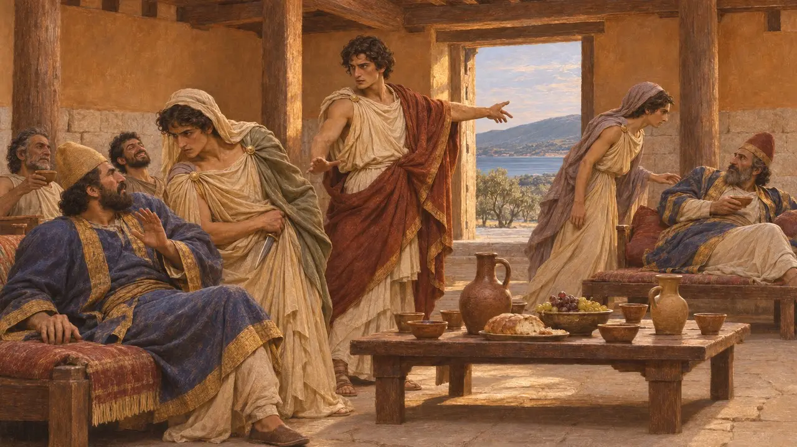
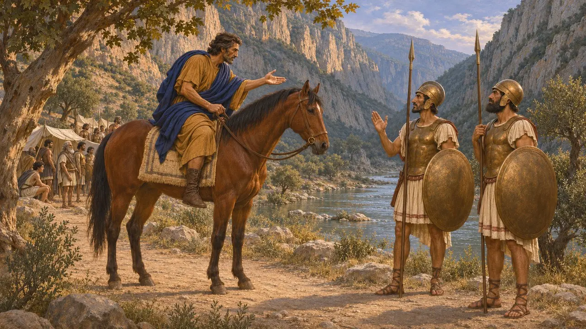
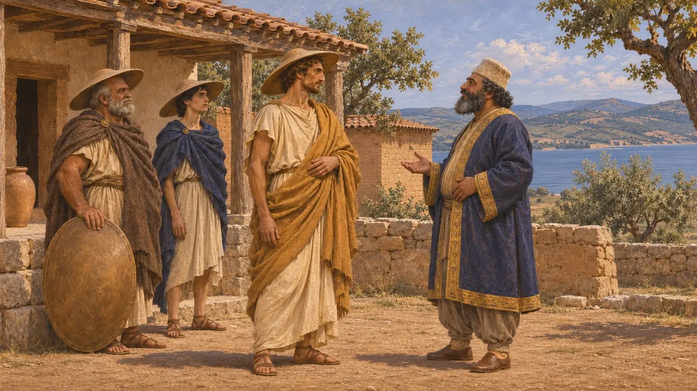
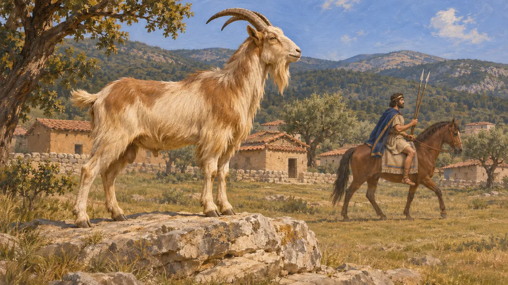

Makedonlar
Thermai Körfezi kıyısında Persia'ya bağlı krallık, yaklaşık MÖ 510-479
Oyunda: Bölüm 9: Kanal, Bölüm 10: Sıcak Kapılar, Bölüm 11: Final
Makedonlar, Tesalya'nın kuzeyinde Thermai Körfezi çevresinde yaşar; Argos soyundan geldiklerini öne süren ve Aigai'de oturan krallarca yönetilirlerdi. Yaklaşık MÖ 510'dan itibaren kralları Perslere toprak ve su verdi; Makedonya da Kral'ın Avrupa'daki dayanak noktası, bir kereste kaynağı ve orduların geçiş yolu oldu. Kralı I. Aleksandros, MÖ 480-479'da Kserkses'e hizmet ederken Herodotos'un anlattığına göre Yunanlılara da gizlice yardım ediyordu.
Oyunda: Oyun, Makedonları bir ticaret ortağı olarak ele alır ve I. Aleksandros'u hikâyeye dahil eder. Tarihte Makedonya yaklaşık MÖ 510'dan itibaren, MÖ 492'den sonra ise kesin biçimde Kralın tabi krallığıydı; eşit bir ticaret devleti değildi, asker vermek ve itaat etmekle yükümlüydü.

Therme Körfezi kıyısında bir krallık
Antik anlatıThukydides'e göre Makedon kralları Argoslu Temenidlerdi ve Pieria ile Bottiaia kıyı topraklarını oradaki halkları sürerek ele geçirmişlerdi. Herodotos da aynı Argos kökenine dair bir öykü anlatır. Eski kraliyet merkezleri Aigai'ydi; bilim insanlarının çoğu burayı bugünkü Vergina'ya yerleştirir. Herodotos, Prasias Gölü yakınlarında daha sonra Aleksandros'a günde bir talent getiren bir gümüş madeninden söz eder.
Thucydides 2.99; Herodotus 5.17; Herodotus 8.137-139

Kral için toprak ve su
Antik anlatıHerodotos'a göre Dareios'un İskit seferinden sonra komutan Megabazos, toprak ve su istemek üzere Kral I. Amyntas'a yedi Pers gönderdi ve Amyntas bunları verdi. Amyntas'ın kızı Gygaia, Pers soylusu Bubares ile evlendi; oğulları daha sonra Asya'daki Alabanda kentini elinde tuttu. Herodotos'a göre İon isyanından sonra Mardonios'un MÖ 492'deki seferi Makedonları sıkı biçimde Pers yönetimine bağladı.
Herodotus 5.17-18; Herodotus 5.21; Herodotus 6.44; Herodotus 8.136

Ziyafetteki elçiler
Geç dönem efsanesiHerodotos ayrıca, Amyntas'ın ziyafetinde sarhoş olan Pers elçilerinin saray kadınlarının eşliğini istediğini anlatır. Genç Aleksandros kadınları dışarı gönderdi, sakalsız delikanlıları onların giysileriyle ve hançerlerle donatarak içeri soktu ve Persleri öldürttü. Bubares kaybolan adamları aramaya geldiğinde Aleksandros, zengin armağanlar sunup kız kardeşini ona vererek aramaya son verdi. Pek çok tarihçi bunu, Makedon krallarının Perslere hizmetini mazur göstermek için sonradan yayılmış bir hikâye olarak yorumlar.
Herodotus 5.18-21

Kserkses ile Yunanlılar arasında Aleksandros
Antik anlatıHerodotos'a göre Aleksandros, MÖ 480'de Tempe'deki Yunan kuvvetine Kserkses'in ordusu gelmeden geri çekilmesini öğütlemiş, Makedonlar da Kserkses'in ordusunda yürümüştür. MÖ 479'un kışında ya da ilkbaharın başında Mardonios, ittifak önermesi için Aleksandros'u Atina'ya göndermiş, Atinalılar bunu reddetmiştir. Herodotos'un anlattığına göre Plataia'dan önce Aleksandros gece vakti Atina saflarına at sürerek Atinalıları yaklaşan Pers saldırısına karşı uyarmıştır.
Herodotus 7.173; Herodotus 7.185; Herodotus 8.136-144; Herodotus 9.44-45

Sadık vasal mı, gizli dost mu
TartışmalıDareios'un mezar yazıtı, ülkeleri arasında Yauna takabara'yı, yani kalkana benzer bir şapka giyen İonları sayar; pek çok araştırmacı bunların Makedonlar, bazıları ise Trakya'daki Yunanlılar olduğunu düşünür. Herodotos, krallığı açıkça Perslere hizmet etmesine karşın Aleksandros'u Yunanlıların dostu olarak sunan Makedon saray anlatılarından yararlanmış görünür. Herodotos ayrıca Aleksandros'un Olympia'da Yunan olarak kabul edildiğini söyler; bazı Yunanlılar bu iddiaya itiraz etmiştir.
DNa; Herodotus 5.22; E. Borza, In the Shadow of Olympus, 1990

Adının yanındaki amblem
BelgelerdeMakedonya'nın oyundaki amblemi, adını Yunanların keçilerle ilişkilendirdiği eski kraliyet merkezi Aigai'nin keçisidir. I. Aleksandros'un sikkeleri de iki mızraklı bir atlı gösterir. Dareios'a toprak ve su veren kralların bayrağı yoktu; bunlar sikkelerinden ve kentlerinden esinlenen amblemlerdir.
Herodotus 5.17-22, 8.137-139; D. Raymond, Macedonian Regal Coinage to 413 B.C., 1953
Kaynaklar
- Herodotus, Histories, books 5-9
- Thucydides 2.99
- DNa
- N. G. L. Hammond and G. T. Griffith, A History of Macedonia II, 1979
- E. Borza, In the Shadow of Olympus, 1990
- P. Briant, From Cyrus to Alexander, 2002